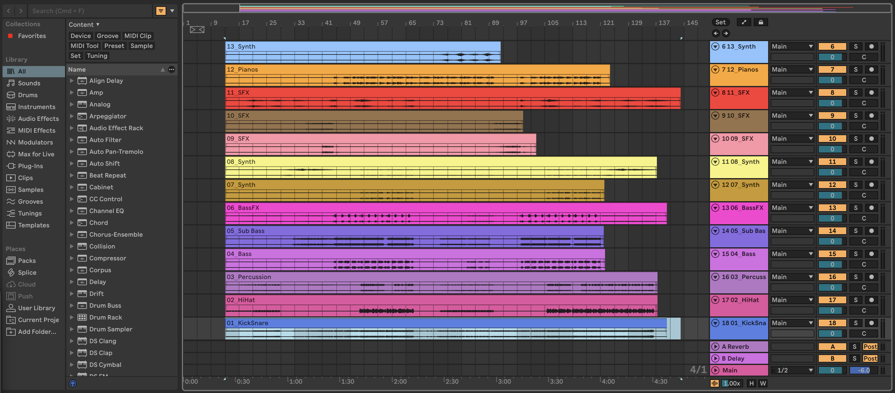

Latest work
Enceladus Jumbled Fresh MixEnceladus

A projection of the surface of Saturn's moon, Enceladus. The projection surrounds the audience member along two walls, allowing for an immersive experience. Audience members experience a simulation of walking on this moon along a preset path. This is the 3D printed decor that was added to the projection, and they sit on a pedestalsurrounding the Leap Motion sensor that takes in hand movement in order to move through the projection.
Jumbled

One-minute long musical composition created by coding in Google Colab using Python. Various concepts that were presented in MAT 111MC were used, including rhythm trees and contours. The goal was to create an audio inspired by glitches and odd rhythms. Claude was used for debugging purposes and code refining.
Fresh Mix

Future goal: Three-minute long musical composition created by putting together tracks in Ableton. The goal is to create a full track inspired by modern house music.